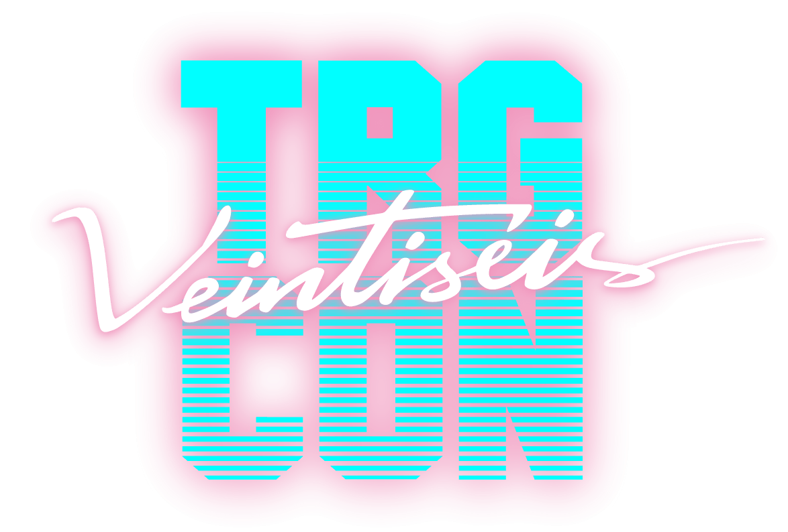
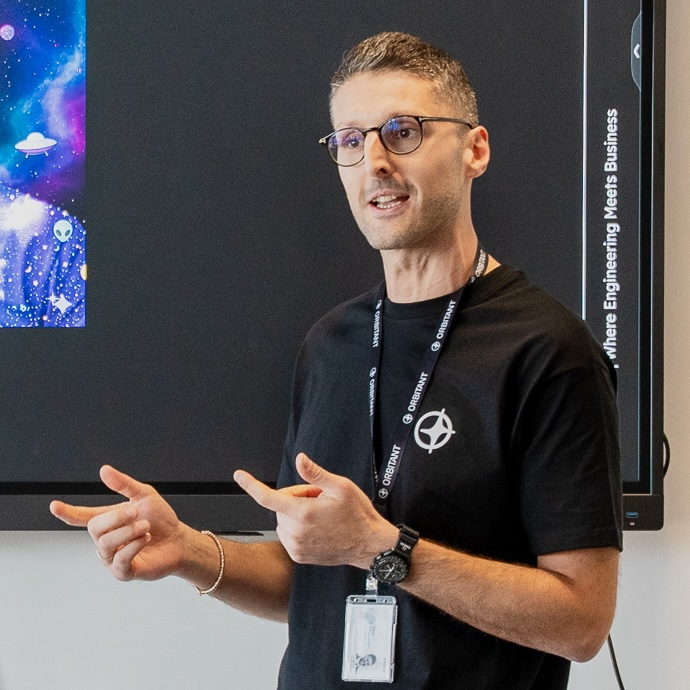
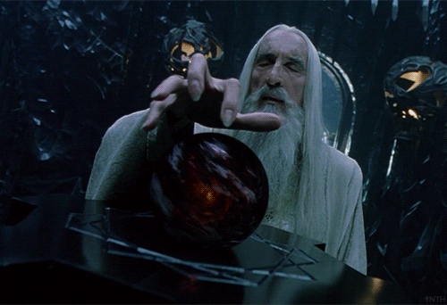
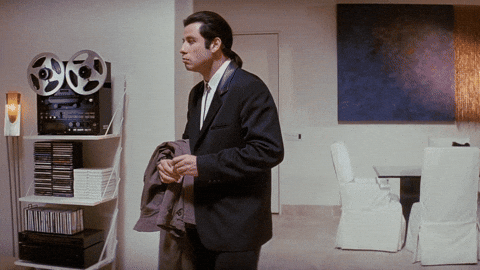
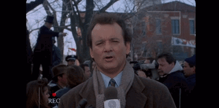
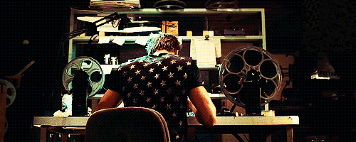
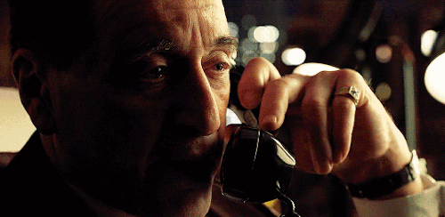

De developer a forward deployed engineer

Who am I

What is Orbitant
What is Orbitant
What is Orbitant
① The first question
Where the word comes from

The short definition
Like a startup CTO…
The premise
Engineers who make the product work inside specific environments.
Forward deployed
The seven criteria
What is NOT in the room

What is NOT in the room
What is NOT in the room
In the room. That week.
Comerse el dolor
Shyam Sankar · Palantir
Head of the FDE team · OpenAI, asked what the job is
The comb, not the T
You don't need to be the best engineer in the room;
you need to be the only person in the room who can do all of it.
The true frame
FDE vs consultant
FDE vs consultant
A good consultant should do all three.
FDE: back to the product.
Consultant: back to the firm?
…or back to their CV.
FDE vs consultant
se queda hasta el final y asume responsabilidad
The founding engineer
The founding engineer
The founding engineer
The founding engineer
The founding engineer
We were already doing this before AI, but not all of it
The client inside
"No sabemos trabajar sin alguien del cliente trabajando con nosotros."
Production
"No hay valor si no está en producción."
Ownership
"Da igual que seas el junior, el senior, el arquitecto o el staff."
The best code
"El mejor código es el que no vas a escribir."
Learning by failing
"Falla rápido, falla barato."
We were already doing this before AI, but not all of it
The client inside
"No sabemos trabajar sin alguien del cliente trabajando con nosotros."
Production
"No hay valor si no está en producción."
Ownership
"Da igual que seas el junior, el senior, el arquitecto o el staff."
The best code
"El mejor código es el que no vas a escribir."
Learning by failing
"Falla rápido, falla barato."
End user
No documented conversation with an end user. Until this year.
Upstream
No instrument for the upstream part. The expensive one now.
We were already doing this before AI, but not all of it
What changed: executing got cheap, thinking did not
4,000
words on how to execute a spec
1
sentence on how to get to it
What changed: executing got cheap, thinking did not
one of our engineers · mid-build
Asked mid-build, misaligned with the business. The whole chain, paid in rework.
What changed: executing got cheap, thinking did not
one of our engineers · mid-build
¿Se puede cambiar una cuota de manera retroactiva?
another engineer · minute 25 of the project
Asked at minute 25. The most complex piece of the system, and no chain to pay.
What changed: executing got cheap, thinking did not
What changed: executing got cheap, thinking did not
6 weeks
to something that works
6 months
to something that gets used
Therefore: now it is mandatory for everyone
Haz que las asignaciones tengan histórico.
Therefore: now it is mandatory for everyone
Haz que las asignaciones tengan histórico.
Therefore: now it is mandatory for everyone
Therefore: now it is mandatory for everyone
What our context does not allow
A product
Nothing behind the engineer. OpenAI can say no to services money; a consultancy can't.
An office
Remote-first. Nobody is sent to ours; nobody will be sent to the client's.
Mixed teams
"Nuestros equipos están enfocados a un cliente, no mezclamos."
Free pain
We sell time. "Comerse el dolor" has an invoice attached.
② The second question
② The second question
The interviews

The interviews
The interviews
The interviews
The lines I loved
Necesitas tener perfiles en la empresa que se puedan tomar el lujo de, durante dos, tres días, simplemente pensar.
un buen equipo de plataforma puede multiplicar el trabajo de los FDEs por diez
Yin & yang.
The lines I loved
Necesitas tener perfiles en la empresa que se puedan tomar el lujo de, durante dos, tres días, simplemente pensar.
A ti no te lo cuentan, lo ves tú mismo.
Context.
The lines I loved
Necesitas tener perfiles en la empresa que se puedan tomar el lujo de, durante dos, tres días, simplemente pensar.
A ti no te lo cuentan, lo ves tú mismo.
El nombre de puesto es muy confuso, no dice de lo que nos estamos encargando. Aparte de mí y mis compañeros, somos los únicos que conozco.
A label.
The lines I loved
Necesitas tener perfiles en la empresa que se puedan tomar el lujo de, durante dos, tres días, simplemente pensar.
A ti no te lo cuentan, lo ves tú mismo.
El nombre de puesto es muy confuso, no dice de lo que nos estamos encargando. Aparte de mí y mis compañeros, somos los únicos que conozco.
Al principio van surgiendo los roles y no sabes muy bien cómo llamarte. El rol era AI expert. Un buen día descubrimos que Palantir por ahí le estaba dando una nomenclatura a todo esto.
Another label.
The lines I loved
Necesitas tener perfiles en la empresa que se puedan tomar el lujo de, durante dos, tres días, simplemente pensar.
A ti no te lo cuentan, lo ves tú mismo.
El nombre de puesto es muy confuso, no dice de lo que nos estamos encargando. Aparte de mí y mis compañeros, somos los únicos que conozco.
Al principio van surgiendo los roles y no sabes muy bien cómo llamarte. El rol era AI expert. Un buen día descubrimos que Palantir por ahí le estaba dando una nomenclatura a todo esto.
Hace año y medio te pedían cuál era el retorno de cada caso previsto. Y ahora… es cualquier cosa.
They ask for more.
The lines I loved
Necesitas tener perfiles en la empresa que se puedan tomar el lujo de, durante dos, tres días, simplemente pensar.
A ti no te lo cuentan, lo ves tú mismo.
El nombre de puesto es muy confuso, no dice de lo que nos estamos encargando. Aparte de mí y mis compañeros, somos los únicos que conozco.
Al principio van surgiendo los roles y no sabes muy bien cómo llamarte. El rol era AI expert. Un buen día descubrimos que Palantir por ahí le estaba dando una nomenclatura a todo esto.
Hace año y medio te pedían cuál era el retorno de cada caso previsto. Y ahora… es cualquier cosa.
El objetivo final es darle la vuelta a la tortilla: que no sean humanos usando IA, sino IAs usando humanos para cuando los necesita.
nos estamos convirtiendo en los agentes humanos de la IA
Humans on call.
The lines I loved
Necesitas tener perfiles en la empresa que se puedan tomar el lujo de, durante dos, tres días, simplemente pensar.
A ti no te lo cuentan, lo ves tú mismo.
El nombre de puesto es muy confuso, no dice de lo que nos estamos encargando. Aparte de mí y mis compañeros, somos los únicos que conozco.
Al principio van surgiendo los roles y no sabes muy bien cómo llamarte. El rol era AI expert. Un buen día descubrimos que Palantir por ahí le estaba dando una nomenclatura a todo esto.
Hace año y medio te pedían cuál era el retorno de cada caso previsto. Y ahora… es cualquier cosa.
El objetivo final es darle la vuelta a la tortilla: que no sean humanos usando IA, sino IAs usando humanos para cuando los necesita.
La mierda siempre vuelve. Cuídate a tu yo del futuro.
Boy Scout.
The lines I loved
Necesitas tener perfiles en la empresa que se puedan tomar el lujo de, durante dos, tres días, simplemente pensar.
A ti no te lo cuentan, lo ves tú mismo.
El nombre de puesto es muy confuso, no dice de lo que nos estamos encargando. Aparte de mí y mis compañeros, somos los únicos que conozco.
Al principio van surgiendo los roles y no sabes muy bien cómo llamarte. El rol era AI expert. Un buen día descubrimos que Palantir por ahí le estaba dando una nomenclatura a todo esto.
Hace año y medio te pedían cuál era el retorno de cada caso previsto. Y ahora… es cualquier cosa.
El objetivo final es darle la vuelta a la tortilla: que no sean humanos usando IA, sino IAs usando humanos para cuando los necesita.
La mierda siempre vuelve. Cuídate a tu yo del futuro.
Soy el señor Lobo. Soluciono problemas.
He had me.
Meanwhile, us
Meanwhile, us
Business
Engineering
Innovation
Meanwhile, us
Business
Meanwhile, us
Business
How a consultancy makes money (or doesn't)
Finance in tech
Meanwhile, us
Engineering
Meanwhile, us
Engineering
Meanwhile, us
Innovation
4business
12engineering
9AI
Meanwhile, us
Innovation
Una pregunta que hoy no sabemos responder.
Sabemos hacerlo · Sabemos que no se puede · Sabemos hasta dónde.
③ The third question
And suddenly, the words
A kickoff summary · April 2026
And suddenly, the words
One of us · about a client's bank credentials
And suddenly, the words
Me · the day the deal closed
Case A · The cowboy

Case A · The cowboy
Case A · The cowboy
Case A · The cowboy
Iván Esteban 12:43 PM
Si el cliente firma y todavía no ha pagado, ¿ya estamos obligados a darle una licencia que puede que no tengamos?
Case A · The cowboy
no me voy a volver muy loco con los diseños… pero que funcione de primeras
Iván · day 8
claude design no coge nuestras tipografías ni el logo… está metiendo bordes y sombras que yo había quitado
Our designer · day 5
Case A · The cowboy
Code in production seven days before launch.
Case A · The cowboy
Case B · The app we made for him
Case B · The app we made for him
Sherpa, minus almost everything.
Case B · The app we made for him
The one thing Sherpa didn't have.
Case B · The app we made for him
Matteo Di Paolantonio 9:27 AM
Eso no le vale, pero si quitamos todo del medio y lanzamos a David Yusta, se lo come en dos días.
Case B · The app we made for him
Case B · The app we made for him
seguir el enfoque de Nexxo
Sherpa's migration plan, twice
un servicio nuevo para gestionar las conexiones, en lugar de añadirlo en Sherpa y Nexxo
July
Case B · The app we made for him
Case C · The client is us
Case C · The client is us
Case C · The client is us
Forty minutes using it for real in Slack found six defects.
Four hours of automated tests had found none.
the engineer, in the repo
Case C · The client is us
Case C · The client is us
Now the pain to solve is a whole company's.
Case C · The client is us
que la gente trabaje con IA como ya trabaja la empresa, no al revés
Two flows in production before December.
To be continued…
Case C · The client is us
④ The fourth question
Our mantra
More willing to learn, to dig, to try, to fail.
Our mantra
Skills are acquired: courses, training, practice.
Our mantra
The engineer of the near future
The engineer of the near future
The engineer of the near future

Our rule, for now
AI
Solutions
Senior
Engineer
Our rule, for now
AI
Innovation
find your way: prototype, fake, probe
Solutions
Senior
Engineer
Our rule, for now
AI
Innovation
find your way: prototype, fake, probe
Solutions
Business · Product
owns the solution and the problem behind it
Senior
Engineer
Our rule, for now
AI
Innovation
find your way: prototype, fake, probe
Solutions
Business · Product
owns the solution and the problem behind it
Senior
The bar
seniors only, for now
Engineer
Engineering
production-grade, end to end
Our rule, for now
AI
Innovation
Solutions
Business · Product
Senior
The bar
Engineer
Engineering
Where we are failing
Here are ours.
Where we are failing
Business, direct
So we try to lift our engineers into part of that work.
Business, direct
The fence · if the PM wants it
Product discovery: the engineer does part of the PM's work, and nothing enters until the brief is ready.
It depends on the PM adopting it.
The meter · if there's no way
Ticket scoring: it is what comes. Score it before and after, and post the bill on the ticket.
At least there is evidence that something is failing.
Business, direct
The fence
Two months to see a Product Owner. Then a PM ran it alone: not ready four times, then ready.
The meter
In production on six services. Its rubric is not calibrated: fifteen of eighteen anchors are synthetic.
The end user
Metrics, yes. The real pain, rarely.
The end user
Adoption · we can measure it
Who uses it, how often, how much.
It goes on a dashboard.
Impact · we barely can
What it changed for the person who uses it.
It goes on nobody's dashboard.
Follow-up
No maintenance team: the team that built it keeps building it.
Follow-up
Learning returns
What solved one client's problem is not a recipe for the next.
Learning returns
Knowledge · it returns
Asteroids, knowledge sharing sessions, courses.
What we learn, we tell.
Solutions · only up to a point
Templates, harnesses, skills and agents built for one client can be reused up to a point in the next one.
Each client opens the door only so far.
⑤ The fifth question
The sheet
The sheet
The slides
matteodipaolo.github.io/
The sheet, same place
Gracias